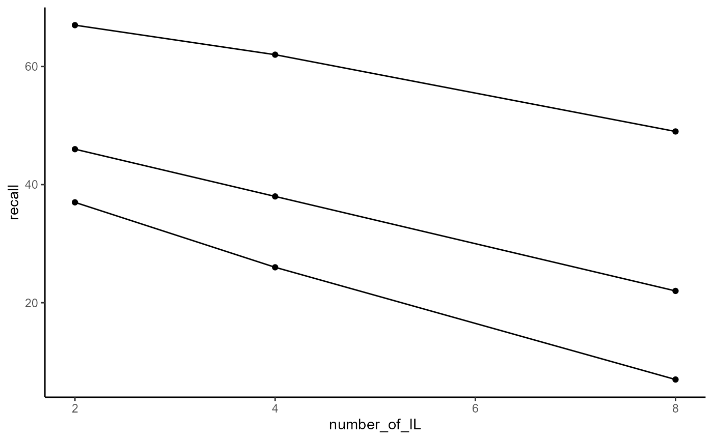
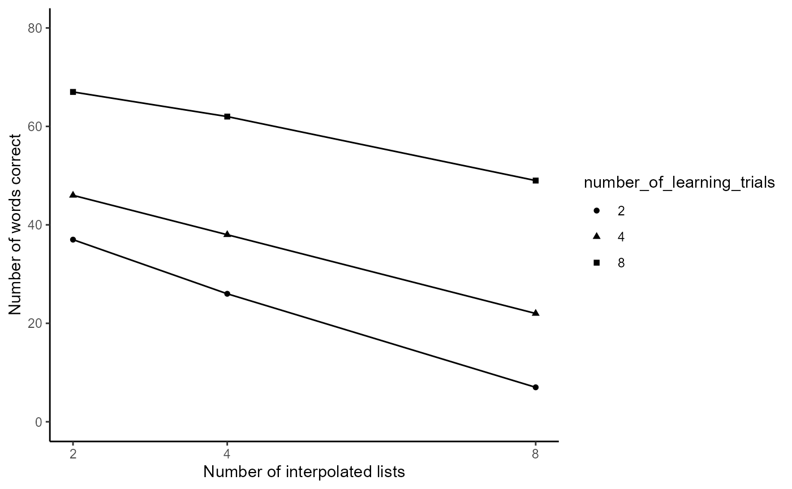
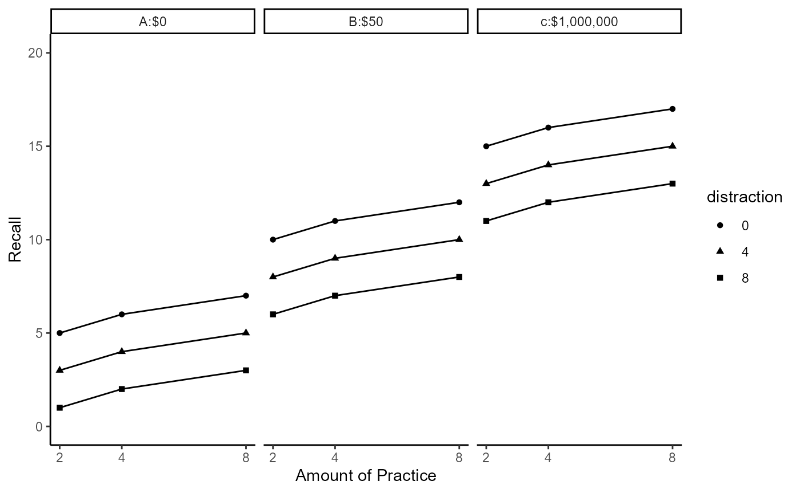
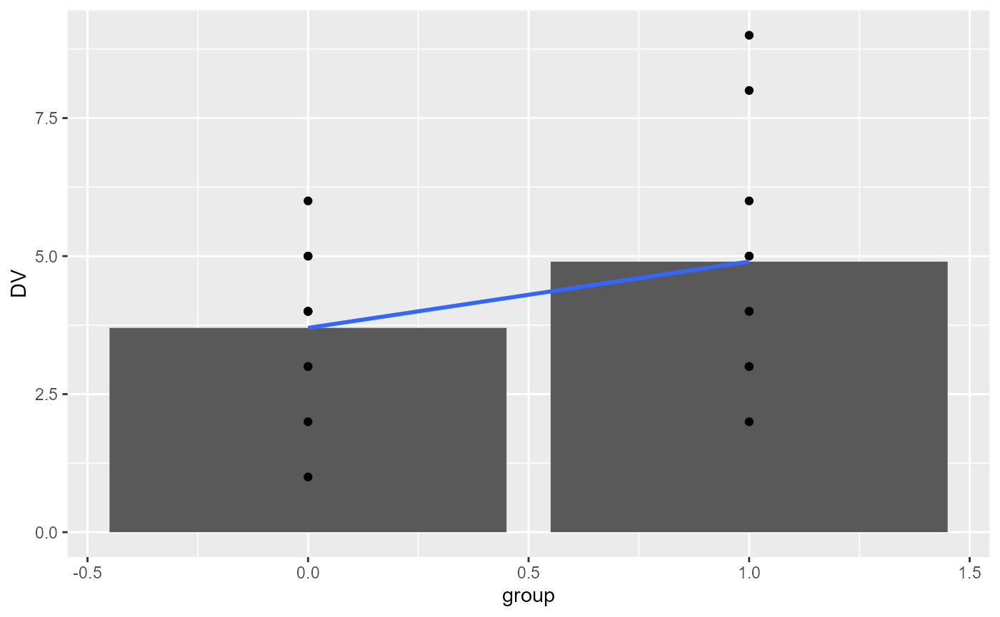
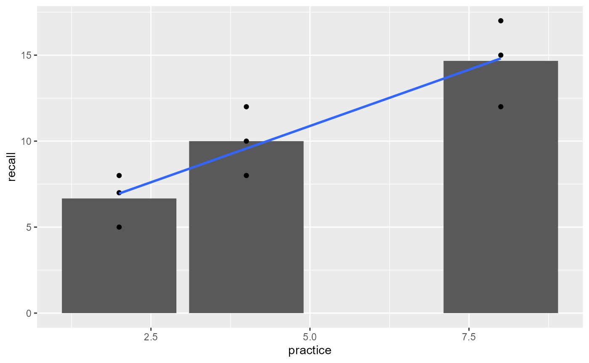
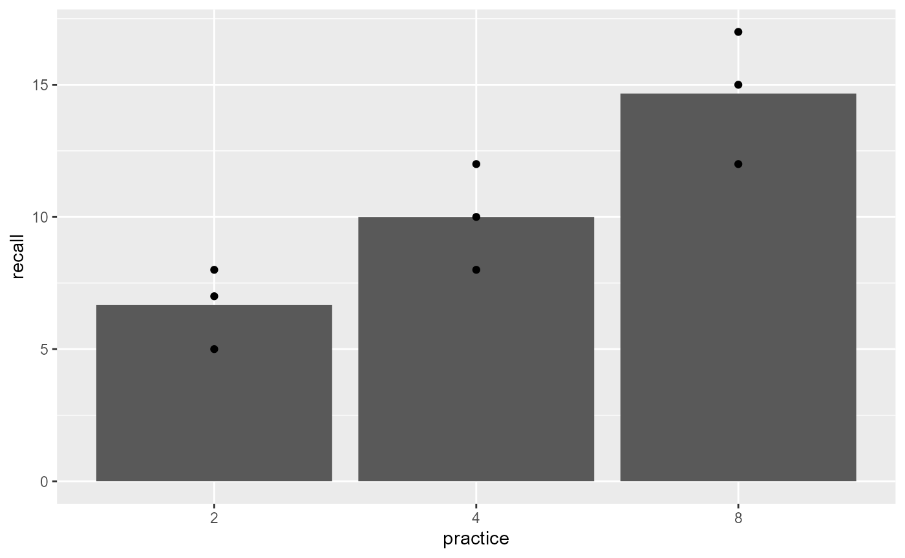
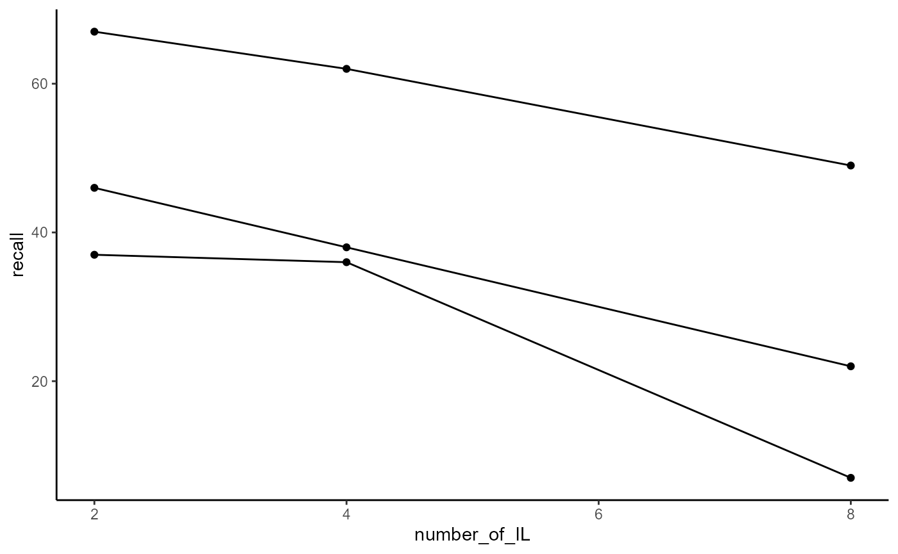
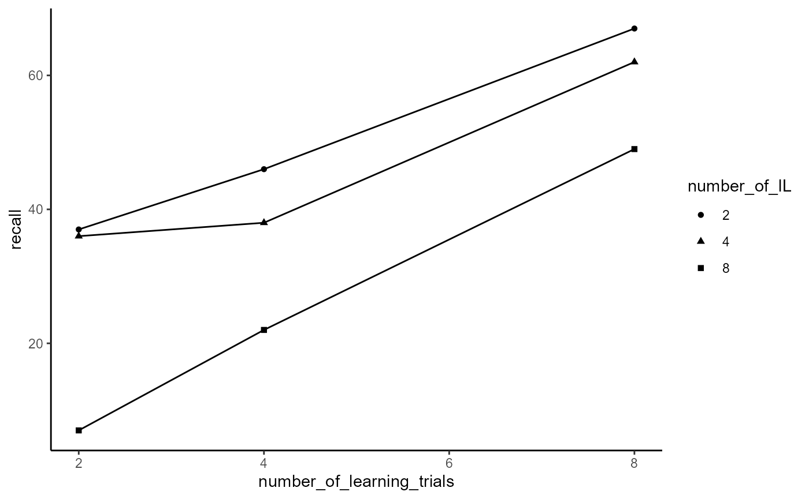
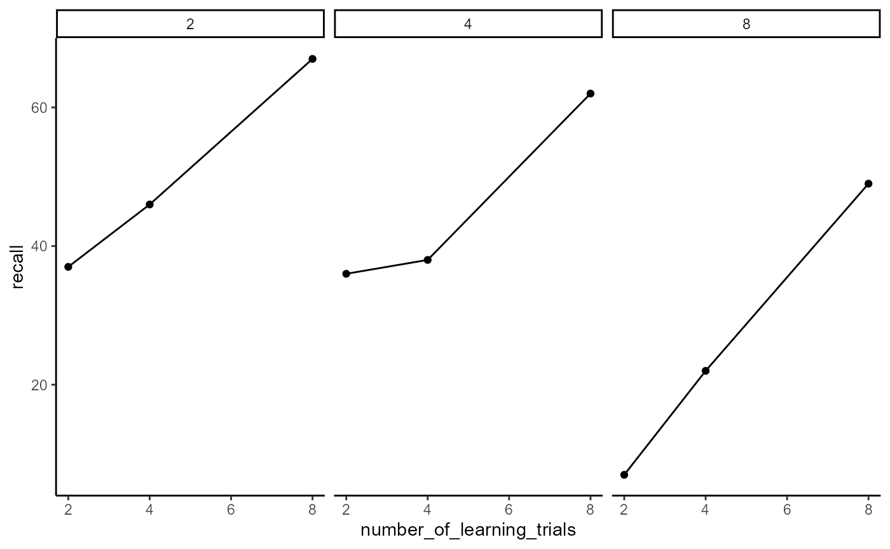
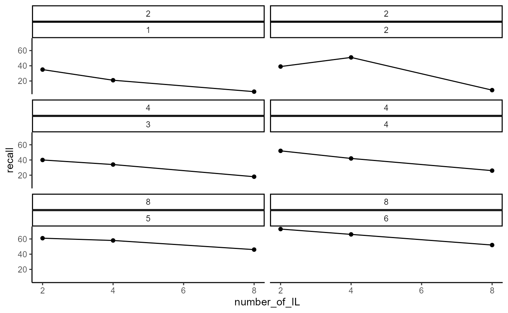

Lab2.Rmd
# Sample Code:
library(tibble)
# Warning: package 'tibble' was built under R version 4.1.3
library(ggplot2)
# Warning: package 'ggplot2' was built under R version 4.1.3
slamecka_design <- tibble(number_of_learning_trials = rep(c(2,4,8), each = 6),
number_of_IL = rep(rep(c(2,4,8), 2), 3),
subjects = 1:18,
recall = c(35, 21, 6,
39, 31, 8,
40, 34, 18,
52, 42, 26,
61, 58, 46,
73, 66, 52
)
)
ggplot(slamecka_design, aes(x = number_of_IL,
group = number_of_learning_trials,
y=recall))+
geom_line(stat = "summary", fun = "mean")+
geom_point(stat = "summary", fun = "mean")+
theme_classic()
# original version:
slamecka_design$number_of_learning_trials <- as.factor(slamecka_design$number_of_learning_trials)
ggplot(slamecka_design, aes(x = number_of_IL,
group = number_of_learning_trials,
y=recall))+
geom_line(stat = "summary", fun = "mean")+
geom_point(stat = "summary", fun = "mean", aes(shape = number_of_learning_trials))+
theme_classic()+
labs(y="Number of words correct", x = "Number of interpolated lists")+
scale_y_continuous(breaks = c(0, 20, 40, 60, 80), limits = c(0,80))+
scale_x_continuous(breaks = c(2, 4, 8), limits = c(2, 8))
# Struggle-report: I was able to assign the labels and read just which variables were on which axes correctly with minimal help (only slight googling), and figured out the shape differentiation with aes, but once it came to skipping the tick-mark for "6" on the x-axis and splitting the legend to address each line individually (*"splitting the legend" turned out to be something you don't care about, so never-mind on that), I needed to check the solutions video. Let's call this a 6/10.
library(ggplot2)
library(dplyr)
# Warning: package 'dplyr' was built under R version 4.1.3
#
# Attaching package: 'dplyr'
# The following objects are masked from 'package:stats':
#
# filter, lag
# The following objects are masked from 'package:base':
#
# intersect, setdiff, setequal, union
library(tibble)
slamecka_design_modded <- tibble(reward = rep(c("A:$0", "B:$50", "c:$1,000,000"), each = 9),
practice = rep(rep(c(2,4,8), each = 3), 3),
distraction = as.factor(rep(c(0,4,8), 9)),
recall = c(5, 3, 1,
6, 4, 2,
7, 5, 3,
10, 8, 6,
11, 9, 7,
12, 10, 8,
15, 13, 11,
16, 14, 12,
17, 15, 13
)
)
ggplot(slamecka_design_modded, aes(x = practice,
group = distraction,
y = recall,
shape = distraction))+
geom_line()+
geom_point()+
theme_classic()+
scale_y_continuous(breaks = c(0, 5, 10, 15, 20), limits = c(0,20))+
scale_x_continuous(breaks = c(2, 4, 8))+
labs(y = "Recall", x = "Amount of Practice")+
facet_wrap(~reward)
# Struggle-report: While I think I know in theory how to add the "reward" variable, I don't think it's clear enough from the question exactly how I should be distributing/arranging/counterbalancing it (with "rep") to line up with the data. Trying not to spoil anything else while checking this in the video...Ok, I thought I'd be able to do it but needed to consult the video again. I know it must have something to do with facet-wrapping. 3/10, maaaybe 4/10 on help required here.
# Unpaired-samples t-test
library(tibble)
simple_design <- tibble(group = rep(c(0,1), each = 10),
DV = c(1, 3, 2, 4, 3, 4, 5, 6, 5, 4, 5, 4, 3, 2, 3, 4, 5, 6, 8, 9))
knitr::kable(simple_design)| group | DV |
|---|---|
| 0 | 1 |
| 0 | 3 |
| 0 | 2 |
| 0 | 4 |
| 0 | 3 |
| 0 | 4 |
| 0 | 5 |
| 0 | 6 |
| 0 | 5 |
| 0 | 4 |
| 1 | 5 |
| 1 | 4 |
| 1 | 3 |
| 1 | 2 |
| 1 | 3 |
| 1 | 4 |
| 1 | 5 |
| 1 | 6 |
| 1 | 8 |
| 1 | 9 |
library(ggplot2)
ggplot(simple_design, aes(x=group, y=DV))+
geom_bar(stat = "summary", fun = "mean", position = "dodge")+
geom_point()+
geom_smooth(method = "lm", se = FALSE)
# `geom_smooth()` using formula 'y ~ x'
t.test(DV~group, var.equal=TRUE, data = simple_design)
#
# Two Sample t-test
#
# data: DV by group
# t = -1.412, df = 18, p-value = 0.175
# alternative hypothesis: true difference in means between group 0 and group 1 is not equal to 0
# 95 percent confidence interval:
# -2.9854404 0.5854404
# sample estimates:
# mean in group 0 mean in group 1
# 3.7 4.9
lm(DV~group, data=simple_design)
#
# Call:
# lm(formula = DV ~ group, data = simple_design)
#
# Coefficients:
# (Intercept) group
# 3.7 1.2
summary(lm(DV~group, data=simple_design))
#
# Call:
# lm(formula = DV ~ group, data = simple_design)
#
# Residuals:
# Min 1Q Median 3Q Max
# -2.90 -1.10 0.10 1.15 4.10
#
# Coefficients:
# Estimate Std. Error t value Pr(>|t|)
# (Intercept) 3.7000 0.6009 6.157 8.18e-06 ***
# group 1.2000 0.8498 1.412 0.175
# ---
# Signif. codes: 0 '***' 0.001 '**' 0.01 '*' 0.05 '.' 0.1 ' ' 1
#
# Residual standard error: 1.9 on 18 degrees of freedom
# Multiple R-squared: 0.09972, Adjusted R-squared: 0.04971
# F-statistic: 1.994 on 1 and 18 DF, p-value: 0.175
recall_design <- tibble(practice = rep(c(2, 4, 8), each = 3),
subjects = 1:9,
recall = c(5, 7, 8,
8, 10, 12,
12, 15, 17))
knitr::kable(simple_design)| group | DV |
|---|---|
| 0 | 1 |
| 0 | 3 |
| 0 | 2 |
| 0 | 4 |
| 0 | 3 |
| 0 | 4 |
| 0 | 5 |
| 0 | 6 |
| 0 | 5 |
| 0 | 4 |
| 1 | 5 |
| 1 | 4 |
| 1 | 3 |
| 1 | 2 |
| 1 | 3 |
| 1 | 4 |
| 1 | 5 |
| 1 | 6 |
| 1 | 8 |
| 1 | 9 |
ggplot(recall_design, aes(x=practice, y=recall))+
geom_bar(stat = "summary", fun = "mean", position = "dodge")+
geom_point()+
geom_smooth(method = "lm", formula = y~x, se = FALSE)
summary(lm(recall~practice, data = recall_design))
#
# Call:
# lm(formula = recall ~ practice, data = recall_design)
#
# Residuals:
# Min 1Q Median 3Q Max
# -2.8095 -1.5714 0.1905 1.0476 2.4286
#
# Coefficients:
# Estimate Std. Error t value Pr(>|t|)
# (Intercept) 4.3333 1.3678 3.168 0.01575 *
# practice 1.3095 0.2585 5.066 0.00145 **
# ---
# Signif. codes: 0 '***' 0.001 '**' 0.01 '*' 0.05 '.' 0.1 ' ' 1
#
# Residual standard error: 1.934 on 7 degrees of freedom
# Multiple R-squared: 0.7857, Adjusted R-squared: 0.7551
# F-statistic: 25.67 on 1 and 7 DF, p-value: 0.001453
# Making it categorical rather than continuous
recall_design$practice <- as.factor(recall_design$practice)
ggplot(recall_design, aes(x=practice, y=recall))+
geom_bar(stat = "summary", fun = "mean", position = "dodge")+
geom_point()+
geom_smooth(method = "lm", formula = y~x, se = FALSE)
summary(lm(recall~practice, data = recall_design))
#
# Call:
# lm(formula = recall ~ practice, data = recall_design)
#
# Residuals:
# Min 1Q Median 3Q Max
# -2.6667 -1.6667 0.3333 1.3333 2.3333
#
# Coefficients:
# Estimate Std. Error t value Pr(>|t|)
# (Intercept) 6.667 1.186 5.620 0.00136 **
# practice4 3.333 1.678 1.987 0.09413 .
# practice8 8.000 1.678 4.768 0.00310 **
# ---
# Signif. codes: 0 '***' 0.001 '**' 0.01 '*' 0.05 '.' 0.1 ' ' 1
#
# Residual standard error: 2.055 on 6 degrees of freedom
# Multiple R-squared: 0.7927, Adjusted R-squared: 0.7236
# F-statistic: 11.47 on 2 and 6 DF, p-value: 0.008905
# The analysis as an ANOVA?
summary(aov(recall~practice, data = recall_design))
# Df Sum Sq Mean Sq F value Pr(>F)
# practice 2 96.89 48.44 11.47 0.0089 **
# Residuals 6 25.33 4.22
# ---
# Signif. codes: 0 '***' 0.001 '**' 0.01 '*' 0.05 '.' 0.1 ' ' 1
slamecka_design <- tibble(number_of_learning_trials = rep(c(2, 4, 8), each = 6),
number_of_IL = rep(rep(c(2, 4, 8), 2), 3),
subjects = 1:18,
recall = c(35, 21, 6,
39, 51, 8,
40, 34, 18,
52, 42, 26,
61, 58, 46,
73, 66, 52
)
)
knitr::kable(slamecka_design)| number_of_learning_trials | number_of_IL | subjects | recall |
|---|---|---|---|
| 2 | 2 | 1 | 35 |
| 2 | 4 | 2 | 21 |
| 2 | 8 | 3 | 6 |
| 2 | 2 | 4 | 39 |
| 2 | 4 | 5 | 51 |
| 2 | 8 | 6 | 8 |
| 4 | 2 | 7 | 40 |
| 4 | 4 | 8 | 34 |
| 4 | 8 | 9 | 18 |
| 4 | 2 | 10 | 52 |
| 4 | 4 | 11 | 42 |
| 4 | 8 | 12 | 26 |
| 8 | 2 | 13 | 61 |
| 8 | 4 | 14 | 58 |
| 8 | 8 | 15 | 46 |
| 8 | 2 | 16 | 73 |
| 8 | 4 | 17 | 66 |
| 8 | 8 | 18 | 52 |
ggplot(slamecka_design, aes(x=number_of_IL,
group = number_of_learning_trials,
y = recall))+
geom_line(stat = "summary", fun = "mean")+
geom_point(stat = "summary", fun = "mean")+
theme_classic()
# Running the Analysis
lm(recall~number_of_learning_trials + number_of_IL, data = slamecka_design)
#
# Call:
# lm(formula = recall ~ number_of_learning_trials + number_of_IL,
# data = slamecka_design)
#
# Coefficients:
# (Intercept) number_of_learning_trials
# 33.889 5.524
# number_of_IL
# -4.119
summary(lm(recall~number_of_learning_trials + number_of_IL, data = slamecka_design))
#
# Call:
# lm(formula = recall ~ number_of_learning_trials + number_of_IL,
# data = slamecka_design)
#
# Residuals:
# Min 1Q Median 3Q Max
# -8.8413 -5.3889 -0.4127 3.1111 22.5397
#
# Coefficients:
# Estimate Std. Error t value Pr(>|t|)
# (Intercept) 33.8889 5.2797 6.419 1.16e-05 ***
# number_of_learning_trials 5.5238 0.7483 7.382 2.29e-06 ***
# number_of_IL -4.1190 0.7483 -5.504 6.06e-05 ***
# ---
# Signif. codes: 0 '***' 0.001 '**' 0.01 '*' 0.05 '.' 0.1 ' ' 1
#
# Residual standard error: 7.92 on 15 degrees of freedom
# Multiple R-squared: 0.8497, Adjusted R-squared: 0.8296
# F-statistic: 42.39 on 2 and 15 DF, p-value: 6.725e-07
ggplot(slamecka_design, aes(x=number_of_IL,
group = number_of_learning_trials,
y=recall))+
geom_line(stat = "summary", fun = "mean")+
geom_point(stat = "summary", fun = "mean")+
theme_classic()
slamecka_design$number_of_IL <- as.factor(slamecka_design$number_of_IL)
ggplot(slamecka_design, aes(x = number_of_learning_trials,
group = number_of_IL,
y = recall))+
geom_line(stat = "summary", fun = "mean")+
geom_point(stat = "summary", fun = "mean", aes(shape = number_of_IL))+
theme_classic()
# Facet-wrapping
ggplot(slamecka_design, aes(x = number_of_learning_trials,
y = recall))+
geom_line(stat = "summary", fun = "mean")+
geom_point(stat = "summary", fun = "mean")+
theme_classic()+
facet_wrap(~number_of_IL)
slamecka_design <- tibble(number_of_learning_trials = rep(c(2, 4, 8), each = 6),
number_of_IL = rep(rep(c(2, 4, 8), 2), 3),
subjects = rep(1:6, each = 3),
recall = c(35, 21, 6,
39, 51, 8,
40, 34, 18,
52, 42, 26,
61, 58, 46,
73, 66, 52
)
)
knitr::kable(slamecka_design)| number_of_learning_trials | number_of_IL | subjects | recall |
|---|---|---|---|
| 2 | 2 | 1 | 35 |
| 2 | 4 | 1 | 21 |
| 2 | 8 | 1 | 6 |
| 2 | 2 | 2 | 39 |
| 2 | 4 | 2 | 51 |
| 2 | 8 | 2 | 8 |
| 4 | 2 | 3 | 40 |
| 4 | 4 | 3 | 34 |
| 4 | 8 | 3 | 18 |
| 4 | 2 | 4 | 52 |
| 4 | 4 | 4 | 42 |
| 4 | 8 | 4 | 26 |
| 8 | 2 | 5 | 61 |
| 8 | 4 | 5 | 58 |
| 8 | 8 | 5 | 46 |
| 8 | 2 | 6 | 73 |
| 8 | 4 | 6 | 66 |
| 8 | 8 | 6 | 52 |
ggplot(slamecka_design, aes(x = number_of_IL,
y = recall))+
geom_line()+
geom_point()+
theme_classic()+
facet_wrap(~number_of_learning_trials*subjects, ncol=2)
library(DBSStats2SemesterProject)